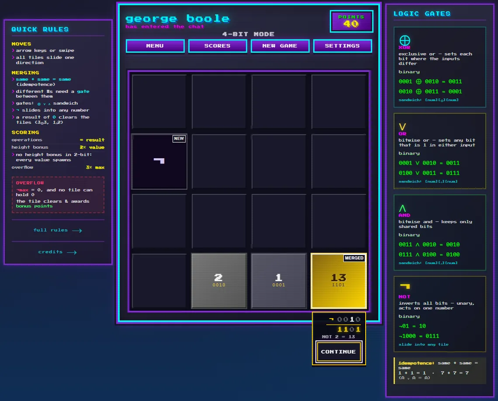
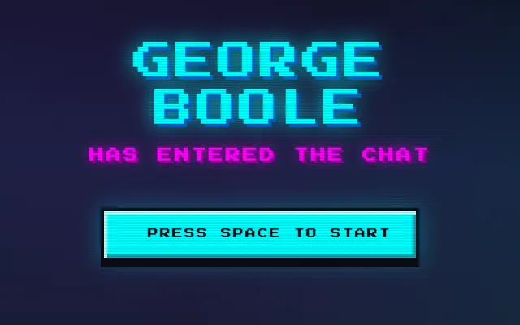
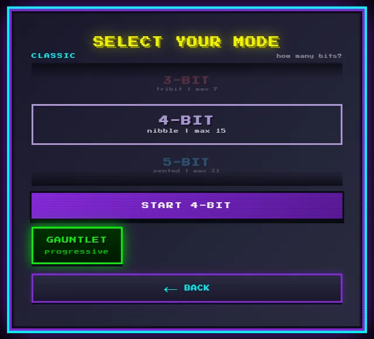

a logic-gate puzzle game · true or false? and, or, not.
Slide the board, merge the bits, and let the logic gates do the rest. It started from Gabriele Cirulli's 2048 and swaps the addition for Boolean logic: AND, OR, XOR and NOT drop onto the board, and every tile that scores shows you the math.
It is being made for four kinds of machine. Each version suits the one it runs on, and all of them play by exactly the same rules.


pipx install magmacrunch-george-boolegame by magmacrunch media
music "George Boole Has Entered the Chat" by Juanito Thompson
sound effects played on a MOOG GRANDMOTHER synthesizer
original concept inspired by Gabriele Cirulli's 2048 (2014), reimagined with Boolean logic instead of addition